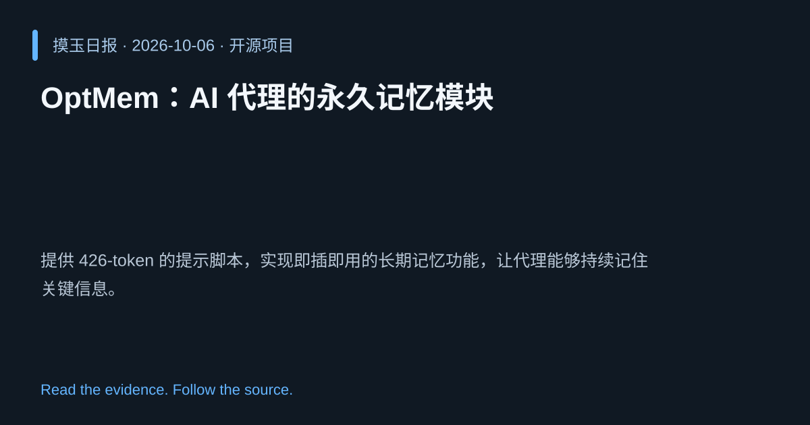

2026-10-06 · Asia/Shanghai · 开源项目 · #4
OptMem：AI 代理的永久记忆模块
VictorTaelin/OptMem
提供 426-token 的提示脚本，实现即插即用的长期记忆功能，让代理能够持续记住关键信息。
为什么值得关注
解决代理短期记忆限制，使其在多轮对话或长期任务中保持上下文连贯性。
- 仅需 426 token 的轻量化记忆提示。
- 即插即用，兼容多种代理框架。

热度 50.1 / 100；排名与评分保留该期记录。
2026-10-06 · Asia/Shanghai · 开源项目 · #4
VictorTaelin/OptMem
提供 426-token 的提示脚本，实现即插即用的长期记忆功能，让代理能够持续记住关键信息。
解决代理短期记忆限制，使其在多轮对话或长期任务中保持上下文连贯性。

热度 50.1 / 100；排名与评分保留该期记录。